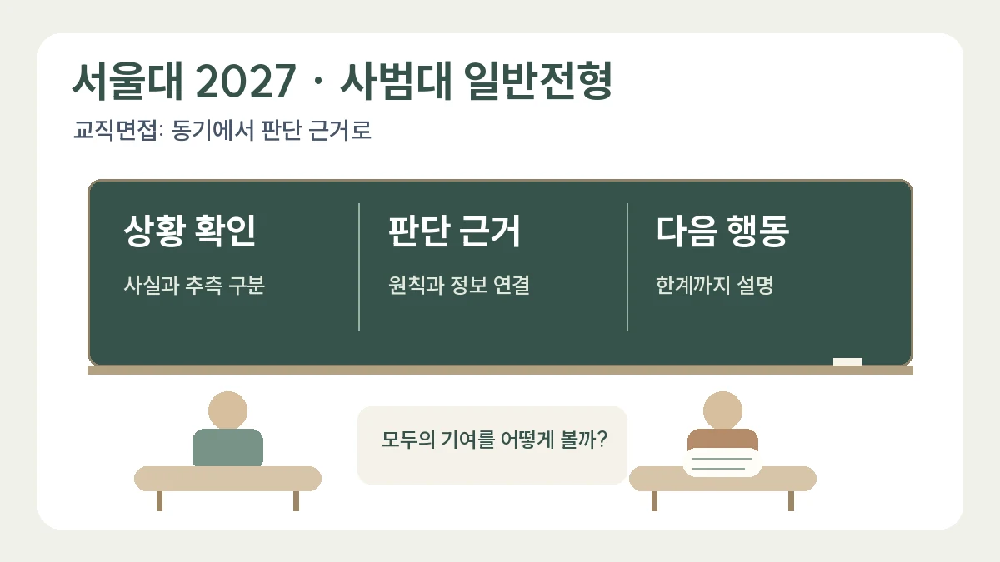

서울대 2027 사범대 일반전형, 교직면접은 ‘교사가 되고 싶다’는 답으로 충분할까?
11월 20일 사범대 공지와 2027 모집요강을 대조해 구술과 별도인 교직적성·인성면접을 정리했습니다. 교직 동기를 외우는 대신 상황·판단 근거·다음 행동을 설명하는 교육용 연습과 11월 27일 입실 점검을 제공합니다.
교사가 되고 싶은 이유는 출발점이지만, 그것만으로 교직적성·인성면접 준비를 대신하기는 어렵습니다. 서울대 2027학년도 수시 일반전형 사범대학은 제시문을 활용한 면접 및 구술고사와 별도로 교직적성·인성면접을 실시합니다. 교직면접의 평가 범위에는 학과 적성뿐 아니라 교사의 기본 자질·인성, 교직에 대한 이해가 포함됩니다.[3][5] 따라서 이 글은 지원 동기를 길게 외우기보다, 교육 상황에서 무엇을 확인하고 어떤 근거로 행동을 정할지 연습해 보자는 편집팀의 제안입니다. 이는 대학의 공개 채점표나 예상 문항이 아닙니다.

1. 새 제도 발표가 아니라, 11월 27일 두 면접을 구분하는 안내입니다
적용 대상은 2027학년도 서울대 수시 일반전형 사범대학 지원자입니다. 2026년 11월 20일 사범대학이 면접 운영 공지를 게시했고, 이 글은 11월 23일 한국시간에 해당 공지·붙임과 현재 입학본부 모집안내 메뉴의 2027학년도 모집요강을 대조해 작성했습니다. 교직면접이 오늘 새로 생겼다는 뜻도, 2028학년도 개편을 현재 수험생에게 적용한다는 뜻도 아닙니다.[3][12]
- 서로 다른 평가: 일반전형의 제시문 활용 면접 및 구술고사와 교직적성·인성면접은 별도입니다. 아로리 안내도 이를 구분합니다. 다른 전형의 서류 기반 면접 안내를 그대로 가져오지 마세요.[5]
- 교직면접 시간: 지원자 1명을 복수 면접위원이 면접하며 15분 내외, 답변 준비도 별도로 15분 내외입니다. 두 면접 전체를 합쳐 15분이라고 읽으면 안 됩니다. 모집요강 PDF 물리 28쪽, 인쇄 24쪽에서 확인할 수 있습니다.[3]
- 배점의 단위: 사범대학 2단계 표는 1단계 성적 100점, 면접 및 구술고사 60점, 교직적성·인성면접 40점으로 제시합니다. ‘교직면접이 전체 전형의 40%’라는 말로 바꾸지 말고 표의 배점을 그대로 확인하세요. PDF 물리 24쪽, 인쇄 20쪽입니다.[3]
앞서 다룬 간호대 상황·학생부 면접 해설의 면접실 구성이나 시간표를 사범대에 옮겨 쓰지 않는 것도 중요합니다. 이 글은 교직에 관한 판단 연습에 집중하고, 일반적인 활동 복기는 서류 기반 면접 준비 가이드와 역할을 나눕니다.
2. ‘좋은 교사’라는 선언을 상황·근거·행동으로 바꿔 보세요
다음은 편집팀이 만든 교육용 가상 사례입니다. 서울대의 기출, 모범답안, 출제 예측이 아니며 실제 학생이 수행한 활동도 아닙니다. 어떤 답이 더 높은 점수를 받는다고 판정하기 위한 예시가 아니라, 자신의 판단이 설명 가능한지 확인하기 위한 연습입니다.
수업의 모둠 탐구에서 발표를 맡은 학생은 눈에 잘 띄었지만, 자료를 읽고 오류를 고친 학생의 기여는 결과물에 잘 드러나지 않았습니다. 한 학생은 모두 같은 평가를 받는 것이 부당하다고 말합니다. 교사라면 무엇부터 확인하고 어떻게 설명하시겠습니까?
수정 전: “교사는 모든 학생에게 공정해야 합니다. 저는 학생을 사랑하는 교사가 되고 싶기 때문에, 참여가 적은 학생도 격려하고 모두가 만족하게 하겠습니다.”
이 답에는 지향하는 가치가 있지만, 누가 무엇을 했는지 확인하는 절차가 빠져 있습니다. ‘말이 적다’는 관찰을 ‘기여가 적다’는 판단으로 바꾸거나, 모든 학생의 만족을 보장하는 결론으로 건너뛰지는 않았는지 살펴보세요.
수정 후: “발표 횟수만으로 기여를 정하지 않고, 먼저 사전에 안내된 평가 기준과 각자의 역할 기록을 확인하겠습니다. 자료 검토나 오류 수정처럼 발표에 드러나지 않은 기여도 살펴보고, 학생들이 서로 다른 설명을 하면 개별적으로 들을 기회를 마련하겠습니다. 이미 안내한 기준과 새로 파악한 사실을 구분해 평가와 피드백을 설명하되, 확인하지 못한 부분은 단정하지 않겠습니다. 다음 활동에서는 중간 점검 기록으로 역할을 더 잘 드러낼 방법을 제안하겠습니다.”
여기서 점검할 것은 멋진 교사상을 얼마나 많이 말했느냐가 아닙니다. 관찰과 추측을 나눴는지, 필요한 정보를 확인했는지, 원칙과 구체적인 행동을 연결했는지를 자신의 말로 짚어 보세요. 이는 공식 세부 평가항목을 옮긴 목록이 아니라 편집팀의 연습 기준입니다.
3. 탐구보고서·세특 경험은 ‘교사가 되겠다’는 포장보다 배운 점의 근거로
기존 탐구보고서나 학생부 활동을 복기할 때도, 모든 경험 끝에 억지로 교직 동기를 붙일 필요는 없습니다. 교직면접이 모든 지원자에게 같은 학생부 질문을 한다고 가정하지 말고, 자신의 학습 경험에서 실제로 설명할 수 있는 장면을 따로 정리해 보세요.
- 개념을 설명한 장면: 상대가 이해하지 못한 이유를 어떻게 확인했고, 예시나 표현을 실제로 바꾼 적이 있나요? 설명을 바꾼 사실과 ‘상대가 완전히 이해했다’는 추측을 구분합니다.
- 협업의 어려움: 갈등의 원인을 상대의 태도로 단정하기 전에 어떤 기록이나 대화를 확인했나요? 본인이 한 일과 팀 전체의 일을 나눠 말합니다.
- 탐구의 수정: 예상과 다른 자료를 만났을 때 무엇을 고쳤나요? 실제 수정과 앞으로 하고 싶은 일을 섞지 않습니다.
활동을 하지 않았다면 있었다고 꾸미지 마세요. 경험이 부족한 교육 상황은 “제가 실제로 수행한 일이 아니라, 제시된 상황에서 이렇게 판단하겠다는 제안입니다”라고 구분할 수 있습니다. 후속 질문 점검 가이드를 활용해 ‘그 판단의 근거는 무엇인가’, ‘다른 조건이면 어떻게 달라지는가’를 서로 물어보는 연습도 가능합니다. 이 질문들 역시 대학의 예상 질문이 아닙니다.
4. 오늘 남길 작은 결과물: 판단 근거 메모 한 장
아래 메모는 준비실에서 반드시 이 순서대로 쓰라는 지시가 아닙니다. 집에서 하는 연습용이며, 실제 시험에서는 제공된 문항과 안내를 우선하세요. 한 상황을 골라 네 줄을 쓰고, 근거 없이 채운 칸을 지워 보는 정도로 시작할 수 있습니다.
- 확인한 사실: 상황 설명에 실제로 있는 정보는 무엇인가요? 말이 없는 학생이 활동하지 않았다는 식의 추측은 따로 표시합니다.
- 더 확인할 정보: 이미 안내된 기준, 당사자의 설명, 역할 기록 가운데 무엇이 필요한가요?
- 판단과 이유: 중요하게 볼 원칙은 무엇이며, 그 원칙이 이 상황의 어떤 사실과 연결되나요?
- 행동과 한계: 먼저 할 일, 그다음 할 일, 아직 결론 내릴 수 없는 부분은 무엇인가요?
친구가 조건 하나를 바꿔 다시 물어보게 해 보세요. 예를 들어 역할 기록이 남아 있지 않다면, 원래 답변의 어느 부분을 수정해야 할까요? 처음 주장을 끝까지 고수하는 것이 목표가 아니라, 어떤 정보가 판단을 바꾸는지 설명하는 것이 이 연습의 목표입니다. 연습을 했다는 사실과 실제 교육 현장에서 문제를 해결한 경험은 구분해 기록하세요.
5. 출발 전 확인: 고사 시작 시각과 입실 마감은 다릅니다
사범대학 11월 20일 공지와 붙임2는 2026년 11월 27일 금요일 09:00부터 고사를 실시한다고 안내하지만, 면접대기실 입실은 07:00부터 07:50까지입니다. 09:00에 도착해도 된다는 뜻이 아닙니다. 붙임1은 모집단위별 면접조·대기실, 붙임3은 고사장 안내이므로 본인의 모집단위와 해당 출입구를 함께 확인하세요.[12]
붙임2 PDF 물리 1쪽에는 호명에 따라 수험번호·면접번호를 확인하고 번호표를 받은 뒤 준비실과 고사실로 이동하는 절차, 면접번호순으로 면접 및 구술고사 다음 교직적성·인성면접을 진행한다는 안내가 있습니다. 이 공개 안내만으로 개인별 실제 시작·종료 시각이나 대기시간을 계산할 수는 없습니다. 수험표·인정 신분증을 준비하고 발언 금지 사항까지 붙임 원문을 읽어야 합니다.[12]
1단계 합격자는 2단계 전형료도 확인하세요. 모집요강의 납부 기간은 2026년 11월 23일 월요일 10:00부터 11월 24일 화요일 18:00까지이며, 미납하면 2단계 전형에 응시할 수 없다고 안내합니다. 접수했던 원서접수 사이트에서 납부 여부를 확인하세요. 모집요강 PDF 물리 6쪽, 인쇄 2쪽입니다.[3]
당일 소지품 제출, 개인 필기도구, 복장·검사 관련 사항은 별도 절차가 있으므로 공지의 붙임2 전체를 확인하세요. 전자기기를 안내에 따라 제출하는 규칙을 ‘학교에 가져오기만 해도 무조건 결격’이라는 말로 확대하지 마세요. 보안 안내의 읽는 법은 논술·면접장 보안 확인 가이드와 함께 보되, 사범대에 적용되는 원문이 우선입니다.[12]
6. 공식 기출은 원문에서, 아직 모르는 것은 모른다고
아로리 자료창고에는 2026학년도 적성·인성면접 기출 제시문이 공개돼 있으며, 해당 PDF 3~4쪽은 사범대학 부분입니다. 문항은 여기 재게시하지 않습니다. 자료창고에서 제목과 학년도를 확인한 뒤 원문을 읽고, 먼저 스스로 답을 구성해 보세요. 과거 문항은 준비 방법을 돌아보는 자료이지 2027학년도 동일 출제를 보장하는 자료가 아닙니다.[7][9]
이번 확인은 최종 모집요강의 해당 쪽, 아로리 안내·기출, 사범대 11월 20일 공지와 붙임을 중심으로 했습니다. 개인별 배정값, 실제 면접 시각, 문항 수와 세부 채점표는 이 글에서 확정하지 않습니다. 영어교육과 개별 홈페이지는 접속 확인이 되지 않아 학과의 추가 공지까지 모두 검증했다고 말할 수 없습니다. 출발 전날과 당일 출발 전에 입학본부·사범대학·지원 학과의 추가 안내를 다시 확인해 주세요.
이 글의 판단 메모와 답변 수정 예시는 편집팀의 교육용 제안이며, 대학의 모범답안·공식 평가기준이나 합격·득점 보장이 아닙니다. 광고는 제외했으며 별도의 사람 검토나 대학 감수를 거치지 않았습니다.
공식 출처
- [3] 서울대학교 2027학년도 수시모집 안내 — 인쇄 2·20·24쪽
- [5] 서울대 아로리 — 학생부종합전형 면접 안내
- [7] 서울대 아로리 — 자료창고
- [9] 서울대 2026학년도 적성·인성면접 기출 제시문 — 사범대학 3~4쪽
- [12] 서울대 사범대학 2027 일반전형 면접 안내 — 2026.11.20 및 붙임1~3
이 칼럼은 운영자의 관점과 일반 교육 정보를 담고 있으며 특정 대학 합격이나 평가 결과를 보장하지 않습니다.
함께 볼 글

학생부 기반 면접 준비: 영역별 활동 복기와 꼬리질문·STAR·PREPNEW
세특·창체·공동체 활동을 동기·과정·결과·성찰로 정리하고 실제 기여와 한계를 설명하는 서류 기반 면접 연습법입니다.

학생부 기반 대입 면접 꼬리질문 점검표: 주장·근거·한계 연결하기NEW
보고서의 핵심 주장에 조건과 반대 질문을 붙여, 근거를 찾을 수 있는 답변과 아직 확인하지 못한 답변을 구분합니다.